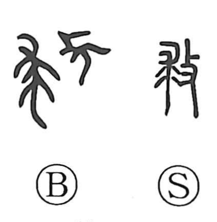

救

Uncategorized
Kun: sukuu | On: kyu
to save ・ to rescue ・ to relieve
Explanation
This character combines 求 and 攴. 攴 conveys the act of striking, while 求 is the original form of 裘, depicting a flayed animal hide used in ritual. In ancient belief, the hide of a spiritually potent animal was beaten to purge afflictions: by striking the hide of the same species as the creature thought to have caused a calamity, practitioners enacted sympathetic magic to dispel curses and avert misfortune. The graph thus portrays the driving away of harmful influences and the restoration of safety, giving the meaning “to save, rescue, relieve.”